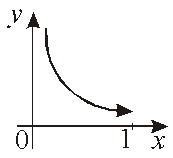

ТУ П 14.№2.
Приведите пример неограниченной функции, непрерывной на интервале.
РЕШЕНИЕ:

непрерывна на интервале
, но не ограничена.
 непрерывна на интервале
непрерывна на интервале  , но не ограничена. непрерывна на интервале , но не ограничена.
, но не ограничена. непрерывна на интервале , но не ограничена.